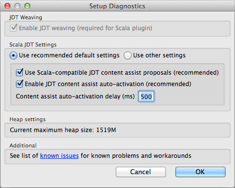

Frequently Asked Questions
General
What Eclipse Platforms are supported?
The Scala IDE 3.0 officially supports both Eclipse 3.7 (Indigo) and has experimental support for Eclipse 3.8/4.2 (Juno) and Eclipse 4.3 (Kepler).
I have a Retina Display and Eclipse looks blurry. How can I fix it?
You need to tell Mac OS that Eclipse is high-resolution capable.
- Right-click on the Eclipse.app and choose “Show package contents”
- Open Contents/Info.plist in an editor
- Add the following at the end of the file, just before the closing tags. It should look like this:
<key>NSHighResolutionCapable</key>
<true/>
</dict>
</plist>
- Move the Eclipse.app to a new folder (to clear OS X’s cache of the Info.plist), then move it back to the old folder.
- Launch Eclipse
What Eclipse package should I use?
The Scala IDE can be installed effortless on any of the below Eclipse packages:
- Eclipse Classic / Eclipse Standard
- Eclipse IDE for Java EE Developers
- Eclipse IDE for Java Developers
- SpringSource Tool Suite
If you are using one of the above Eclipse packages you are all set and ready to install the Scala IDE.
In case you are using a different Eclipse package (e.g., Eclipse IDE for C/C++ Developers), don’t panic, the Scala IDE has only one dependency and it’s a two minutes job to update your Eclipse environment and be ready to start your Scala journey.
Start by installing the Eclipse JDT (Eclipse Java Development Tools). To do so, open Eclipse and go to the Help > Install New Software menu, select the eclipse update site (e.g. “Indigo - http://download.eclipse.org/releases/indigo”) and, under the Programming Languages section, select Eclipse Java Development Tools. Install it.
Now that the JDT is installed, go ahead and install the Scala IDE.
Can I install more than one Scala IDE plugin?
Currently, it is not possible to install more than one Scala IDE plugin within the same Eclipse installation. You need to decide what version of Scala you want to be using and then choose the appropriate update site.
I have an existing Java project and I wish to add Scala files. How do I convince Eclipse to work with Scala?
Right click on the project in the Package Explorer view, and in the context menu select Configure → Add Scala Nature.
I am running out of stack space in Eclipse. How do I increase the stack size?
If you are starting Eclipse from the command line, you can supply virtual machine arguments, including stack size, like this:
eclipse [normal arguments] -vmargs -Xss8M [more VM args]
You can also edit eclipse.ini in the Eclipse installation/application. There, lines that look like
-vmargs
-Xms40m
-Xmx256m
can be replaced with something like (for an 8 megabyte stack, 700MB initial heap, 2GB maximum heap)
-vmargs
-Xss8m
-Xms700m
-Xmx2048m
Scala IDE complains about ‘no Scala library...’ or ‘More than one Scala library...’
The Scala IDE validates all Scala projects’ classpaths to check that the Scala library has been correctly setup. It is checking two points: that the project build path contains only one Scala libraries, and that its version is compatible with the installed version of Scala IDE.
Not using m2eclipse
It needs to be fixed manually.
- If the error is ‘no Scala library...’, one Scala library needs to be added to the build path. The simplest thing is to add the Scala library container: right-click on the project in the Package Explorer view, then in the context menu select Build Path → Add Libraries..., and add the Scala Library.
- If the error is ‘more than one Scala library...’, the number of Scala libraries needs to limited to one in the build path. If possible, make it being the Scala library container provided by Scala IDE.
Using m2eclipse
With projects imported using m2eclipse, the classpath validator can report an error because the Scala library is visible more than once in the build path. The m2eclipse-scala project was created to, among other things, fix these classpath problems.
Use this update site to get the latest version.
After installation, re-importing your projects should get them configured correctly.
Scala IDE complains about ‘... is cross-compiled with an incompatible version of Scala ...’
The Scala IDE tries to check if binary incompatible Scala libraries have been inadvertently mixed in a project’s classpath. It works by extracting, from the name of the jars, which major version of Scala it has been compiled against (assuming the Scala convention for publishing cross-compiled libraries, and further assuming that Scala minor releases are binary compatible). If the extracted Scala major version doesn’t match the one bundled with the Scala IDE, a problem is reported. This ad-hoc validation prevents one of the most common reason for compiler crashes and lack of intelligent behavior in the Scala IDE.
If this check returns a false-negative, it can be disabled at the workspace level, or at the project level. The setting is withVersionClasspathValidator in the Scala → Compiler → Build Manager preference section.
Scala Interpreter
What are the limitations?
- The colon commands available in the terminal REPL are not supported.
- Commands cannot be forcibly killed. For example, if an infinite loop is launched, it will continue in the background until Eclipse is shutdown.
Know Issues
Do Not Enter road sign when opening a Scala Editor
Symptoms:
When opening a Scala editor, the error “Could not open the editor: org.eclipse.jdt.internal.core.CompilationUnit cannot be cast to scala.tools.eclipse.InteractiveCompilationUnit” (or something similar) appears.
Solution:
The Scala IDE uses weaving to behave as (much) more than a Java editor on Scala files, and this is the message you get when it is not active.
JDT weaving is activated by default. Moreover, Scala plugin checks it is activated at every launch. The easiest way to debug this is therefore to accept activation of JDT weaving at launch. Otherwise, you can look into turning it on manually using the Scala Diagnostics Dialog.
Scala errors on all Unicode arrows
Symptoms:
The code contains Unicode niceties like ← and ⇒, but the editor doesn’t seem to be able to display them, and errors are reported at their location.
Solution:
The operating system is not using UTF-8 by default, and its default encoding is used inside Eclipse.
The encoding used to open files can be configured at different levels. Most of the time, setting Eclipse default encoding to UTF-8 in General → Workspace in the preferences [1] is enough. But in some case, the wrong encoding might also have been set in the project properties, or even the file properties.
Red screen of death (red squiggles everywhere)
The number one cause of nothing works is a mismatch between the Scala version of the Eclipse plug-in and your project’s. Make sure there is only one version of the Scala library on your classpath, and that it matches the version provided by Scala IDE. The prime suspect is Maven Dependencies, which can download and add an incompatible scala-library.jar.
The classpath validator added in Scala IDE 2.0.0 should detect this problem and provide meaningful problem markers.
No completions available
Symptoms:
When pressing Ctrl-Space, the list doesn’t contain code completion proposals, only templates, but other semantic actions (such as hyperlinking) work fine.
Solution:
During the development of version 2.0.0, the configuration of the Scala completion engines has been modified to make sure that no more disabled by mistake. If Scala IDE has been updated from an old beta version, it is possible that the Scala completion engines (Scala Completions and Scala Completion (Java sources)) need to be re-enabled.
The diagnostic tool at Scala → Run Setup Diagnostic allows to fix this problem. Make sure that Use Scala-compatible JDT content assist proposals is enabled.
Bad completion when using companion object in Java
Using the Java code assist to access a Scala companion object generates invalid code.
package stest
class S3
object S3 {
def some { }
}
package jtest;
import stest.S3;
public class J {
public void s() {
S3$.// call code assist here, select MODULE$
}
}
This a JDT problem. See #1729.
Eclipse freezes (deadlock)
Symptoms:
The IDE is completely frozen.
A known manifestation of this problem occurs when the SmartIndenter kicks in (for instance when a return carriage is inserted in the Eclipse Editor), which is particularly annoying since all unsaved work will be lost.
Solution:
Apparently, this problem is due to a bug in the Oracle JVM, and it is fixed in the JRE 7 (read more...). Hence, you should not experience this problem if you upgrade to JRE 7 or newer.
If you cannot use the JRE 7, then you can try the workaround described below.
Workaround:
If the deadlock is an instance of #1000317 (deadlock in the JDT weaving code) or #1000996 (deadlock during indentation) you can edit your eclipse.ini file using the recommended settings:
-XX:+UnlockDiagnosticVMOptions
-XX:+UnsyncloadClass
-Dosgi.classloader.lock=classname
This will reduce the probability of getting a deadlock, but wont fix it.
If you encounter this problem, the best thing is to take a thread dump:
Once the IDE is frozen, the following command provide the process id of the running virtual machines:
$ jps -vThen this command generates the thread dump:
$ jstack <pid>
If the thread dump doesn’t match the one in #1000317 or #1000996, please open a new ticket with your thread dump attached.
NoClassDefFoundError (scala/tools/nsc/settings/MutableSettings$SettingValue)
Symptoms:
After upgrading the Scala plug-in, java.lang.NoClassDefFoundError: scala/tools/nsc/settings/MutableSettings$SettingValue exception is reported for all Scala projects in the workspace. Scala IDE is then unusable.
Solution:
If you have several update sites providing different version of Scala IDE, Eclipse may have decided that a newest Scala library should be used instead of the one provided by the plug-in to be installed. To avoid this problem, make sure to uncheck the Contact all update sites during install to find required software option. It is situated at the bottom of the Help → Install New Software... dialog.
Incorrect compiler error reported in the Scala Editor
Symptoms:
A compiler error is reported in the Scala editor, when indeed the code is correct.
Solution:
In rare circumstances, the interactive typecheker (a.k.a., presentation compiler) can get in a state where it reports false, type-checking errors. As a workaround, we’ve provided a UI action that force restarts the presentation compiler. You can access it by right clicking on the project folder in the Package Explorer view, then Scala → Restart Presentation Compiler. If the incorrect error is still reported after restarting the presentation compiler, please drop us a note in the scala-ide-user mailing list.
| [1] | The Eclipse preferences are accessible using Windows → Preferences (or Eclipse → Preferences on Mac osX). |